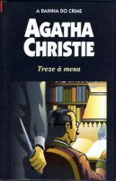

Treze à Mesa
Lord Edgware Dies
Num mundo de aristocratas excêntricos e de atrizes e atores famosos se tecem os fios da complexa e inquietadora intriga deste romance que poderia levar como subtítulo um baile de máscaras, porque na realidade transforma-se em um cenário macabro de mutantes e enganosas aparências, sob as quais se oculta o rosto de um implacável assassino. Entre os assistentes a esse perverso teatro se encontra um espectador muito difícil de enganar: Hercule Poirot, quem, além de utilizar outros sutis recursos, vale-se como de um espelho, do cérebro estritamente normal de seu amigo íntimo, o capitão Hastings — reencarnação moderna do doutor Watson —, para ver, refletido nele, o que o assassino quer que os outros vejam. Com uma modéstia inusitada, Poirot, por uma vez na sua vida, priva-se, injustamente, de todo merecimento, pois diz que pôde desmascarar o autor de três assassinatos, não pelo bom funcionamento dos seus neurônios, mas sim por ter ouvido, na rua, uma conversa trivial. A verdade é que, se o ouvinte não tivesse sido o detetive bigodudo, um inocente, e não o verdadeiro assassino, teria morrido na forca.